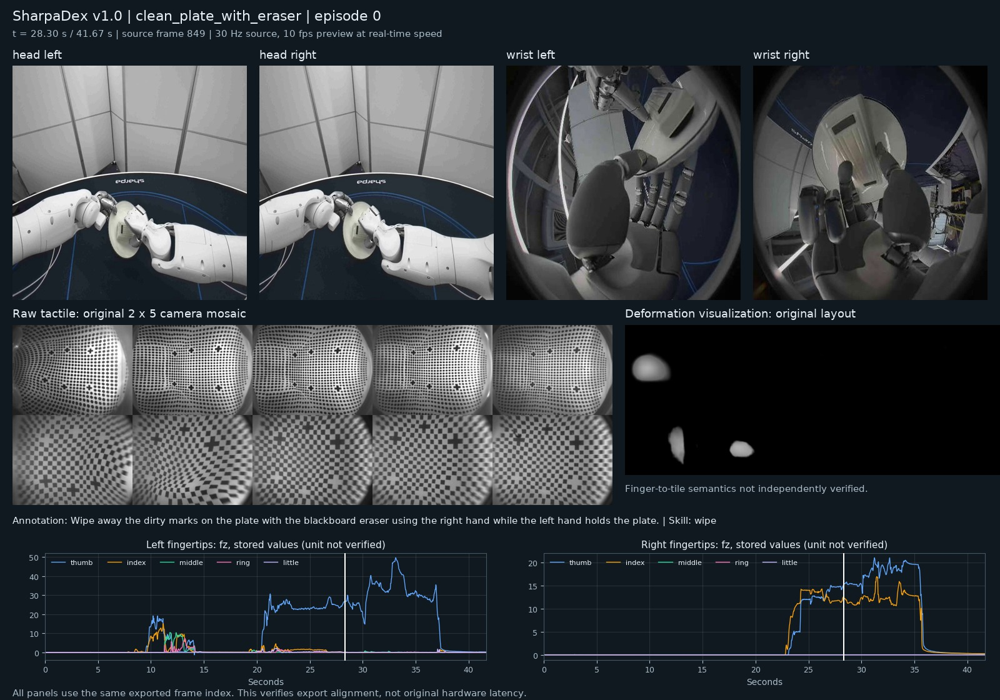

SharpaDex v1.0：约300小时双臂灵巧操作数据技术核查
核查日期：2026-10-20。固定仓库版本：c8032fd891e3f6f19b0d4886793579c1dce5eea7。本次读取全部495份LeRobot v3.0元数据，完整下载一条六路视频轨迹，并另抽查两任务的Parquet和语言标注。官方地址：SharpaDex-v1.0。
结论：应列为TouchWAM真机触觉世界模型的优先训练候选。 它同时提供场景视觉、空间触觉图像、60维触觉信号、机器人状态与动作、阶段语言，能够构建动作条件下的视觉—触觉预测样本。其约300小时是实际发布元数据支持的规模，不是从少量样例时长外推的结果。上一版报告的Sharpa North-FTP-1条目不足以代表这个官方发布集合。
1. 实际核实的规模
两个LeRobot导出v3.0和v2.1是同一批示范，只计一次。六路视频和十个指尖也不能分别累加小时。这里核实的是发布元数据的导出时长，含非接触和等待帧；没有将全库视频逐一下载解码，也没有测净接触时长。
初始HF信息接口恰好返回100,000个文件名，存在截断，不能据此推断后半任务缺失。本次改用根目录及任务目录逐层枚举，再读取全部495份info。所有info的响应commit均与本报告固定版本一致。59个任务的season、episode、frame数与README逐项完全吻合。
“59任务”指根目录类别，不能累加每个season的total_tasks：其中447个为1、47个为2、1个为3；部分lookup文本还有重复。详见元数据核查报告、全量统计JSON、逐任务CSV。
2. 数据具体包含什么
采集平台为真实双臂系统：每臂7自由度、每手22自由度，另有7个躯干／motor通道。操作由人类遥操作完成，归入机器人真机触觉，不属于人类ego数据。
60维触觉在schema中有逐指逐轴名称；但单位、标定、传感器坐标系未充分说明。本次未把其数值直接解释为N或N·m。TCP的rotation_type=null，单位、参考坐标系和旋转表示未充分声明；不能只因向量宽度为6就猜欧拉角。
样例原触觉图呈2×5拼接，图像具有真实接触形变。每个图块与解剖手指名称的映射尚未独立核实；训练前应确认映射，不能凭图块位置给其命名。两种触觉视频是同一采集的不同表示。
来源：官方特征与触觉说明、实际样例info、modality元数据。
3. 实际轨迹与可视化
已下载clean_plate_with_eraser的一个完整episode：1,250帧、41.667秒。四路视觉＋触觉原图＋形变视频全部完整解码，各有1,250帧、30FPS，容器时长均为41.666667秒。Parquet timestamp从0到41.633335秒，frame_index为0–1249，数据无NaN/Inf。
操作过程为左手持盘、右手持擦子清洁盘面。可视化把四路视觉、两路触觉图像和左右手五指fz曲线放在同一时间轴上；数值使用原始存储值，不虚构单位或触觉插值。下方预览以10FPS显示原30FPS轨迹，保留1倍时间速度，约41.7秒。

单独打开预览视频 · 视频解码检查 · 数值检查 · 可复现绘图脚本文本（下载后去掉.txt）
导出层的帧数／时间网格一致，不能独立证明原始硬件没有延迟。 当前公开示例未包含可用于逐传感器时钟误差审计的完整原始时戳；因此不声明毫秒级物理同步精度。
4. 三条真实样例的质量检查
三条样例的joint action和TCP action均不等于相应observation，支持它们作为独立命令字段使用；这项检查本身不证明命令与物理执行零延迟。以下问题需要在训练预处理中明确处理：
- 三条样例的触觉首帧均为60维全零；相邻触觉行完全重复的次数分别为10、4、2。原因可能与初始化或对齐有关，不能仅凭重复就判为传感器掉帧，也不能把首帧当作已证实的无接触真值。
- TCP的12个force/torque槽位全零；关节力矩的7个motor槽位全零。锤钉样例另有部分左手力矩及左手动作恒零，与仅用右手的标注相符，不能直接判定故障。恒零／不活动维应有mask。
- 样例语言区间
end_step包含端点。锤钉与插插头的细粒度覆盖分别为90.75%、79.10%；尾部没有局部段时，subtask_index可回退到全局描述，不能把它误读成额外局部技能。
- 相同lookup文本可有不同索引；全库skill或task计数不能只数lookup行。三条便利样例不代表全库质量或失败率。
两条独立抽查结论与详细统计保留帧位置、端点核查及下载SHA256。
5. 语言标注与任务分布
作者报告全部28,993个episode有全局语言，217,642个细粒度段，覆盖28,920,254帧（89.3%），有45个非空skill标签。全局描述含Task、Instruction、Scene、Success；局部段对应pick/place/wipe等操作阶段。这些语言全库数字本轮引用官方说明，没有重新读取全库每份annotations独立重算。
1,061条场景描述由已有文本与视觉抽查补充，标注元数据保留来源，部分episode没有独立instruction/success/SOP字段。不能把这些描述统一声称为完整人工逐帧标注。
任务分布明显不均衡：熨衣约21.090小时、发牌19.210小时；拔钉仅0.196小时、24条示范。时长前10任务合计130.710小时，占全库约43.6%。做接触动力学训练时应按任务、接触阶段及手指使用情况采样，避免长任务的等待帧主导训练。
6. 与原报告Sharpa North-FTP-1的关系
原R16使用FTP中约4,000条Sharpa示范的说明，并按单任务样例估时长约25.24小时；保存帧率和全量发布覆盖均未确认。不能把这项估计当作SharpaDex的规模。
新库实际annotation来源路径含North/SharpaOpenData，与旧库同属Sharpa North采集家族。新库495个season目录日期为2026-03-10至07-07，未发现旧FTP已核实的02-09 tube样例；但我们只掌握旧库部分来源标识，仍不足以证明整体互斥或严格包含。
建议在总报告中以本库作为该家族的官方主入口，保守地暂不额外累计旧R16。跨库去重应使用source_uid、原始采集目录和动作序列；新库导出episode已经可能重编号，不能仅凭episode_000000匹配。完整论证见关系核查笔记。
对上一版时长统计的影响（2026-10-20已同步到Atlas主报告）： 本轮以SharpaDex作为该家族主入口，且不额外加旧R16，机器人“公开范围主估计”已由343.815更新为643.779小时，五类主估计已由666.111更新为966.076小时。旧R16约25.238小时已从“全量覆盖待确认”栏撤出额外加和；这不是认定新库已包含全部旧轨迹。
7. 面向TouchWAM的使用建议
- 先做动作条件的视触觉预测。 以视觉、逐指触觉特征、60维数值触觉和关节状态为观察，以真实命令action为条件预测后续接触状态；它比只有视频或无动作的触觉图像库更贴合这个训练目标。具体收益仍需实验验证。
- 分别处理触觉图像和数值信号。 确认图块映射后，把2×5触觉图按传感器拆分编码，避免将1600像素宽的全图直接缩到256而损失细节。形变视频不当作物理深度真值；force与torque分别统计归一化。
- 首轮优先关节动作表示。 TCP单位／坐标／旋转约定未确认前，不做跨数据集几何变换。对恒零槽位、初始化帧与未标注阶段显式mask，并区分缺失、占位零和实际近零接触。
- 按season划分训练和验证。 使用
task/season/episode和源UID组成唯一标识，不随机拆相邻帧；另留出任务或任务家族测泛化。仓库组织为多season根目录，不能把仓库顶层直接视为单个LeRobot root。
- 只下载一个导出。 新项目优先v3.0；v2.1适合逐episode取样或旧管线。API
usedStorage约7.695 TB是仓库存储口径，含两导出且可能含历史对象，不能当单版下载量。meta中的100/200MB是切分目标大小，不是归档实际体积。
本次清盘样例六路视频约192.8MB，不能据这一条轨迹线性外推整个版本存储量。批量训练应按实际所需相机／触觉流选择下载，随后盘点下载体积与吞吐。
8. 许可、来源与核查边界
许可为CC BY-NC 4.0，明确限非商业用途；它是公开可下载数据，不能写成无限制商用开源。使用时按许可署名、附许可链接并说明修改。
当前网络无法直连HF，实际请求经hf-mirror取得，来源链接仍指官方仓库；495份info响应commit已逐一核对。全库元数据审计、三条数值抽查、一条完整六视频解码是本次实际完成范围，不等同于28993条视频全量完整性、物理标定、硬件同步精度或任务成功率审计。
附表：全部59任务的元数据时长